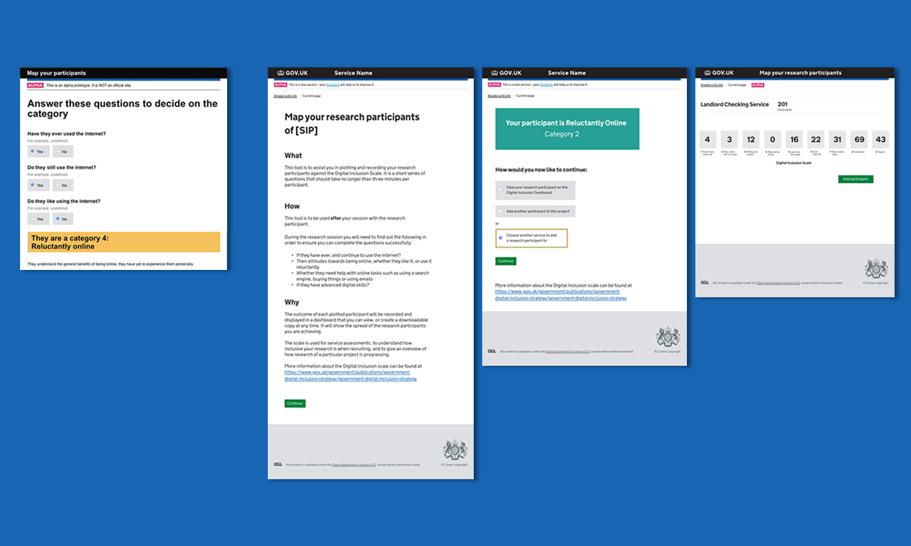
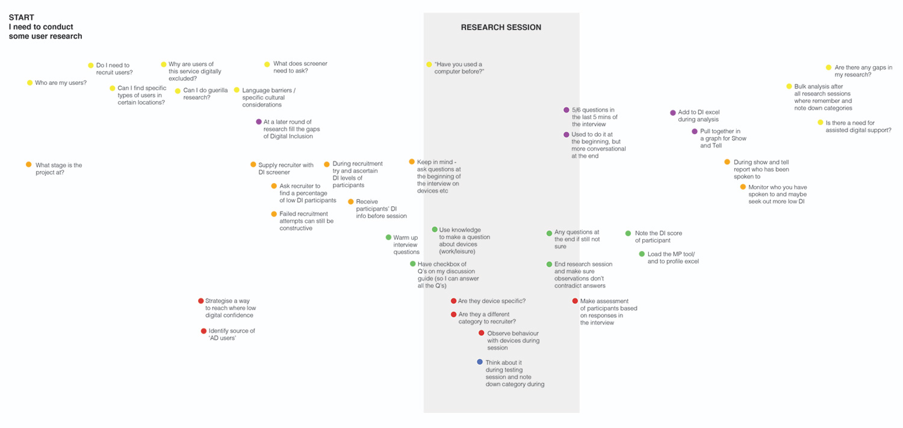
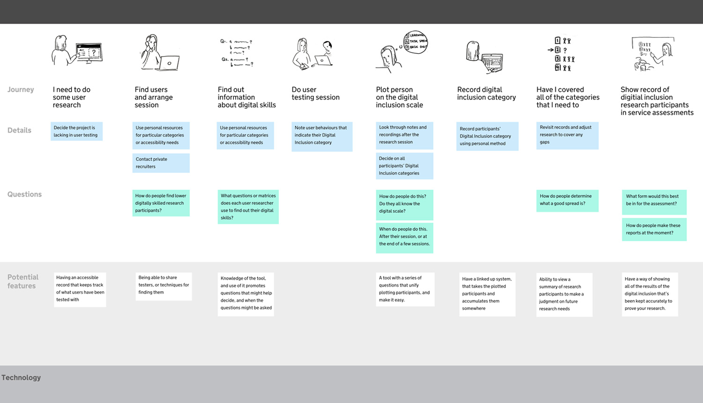
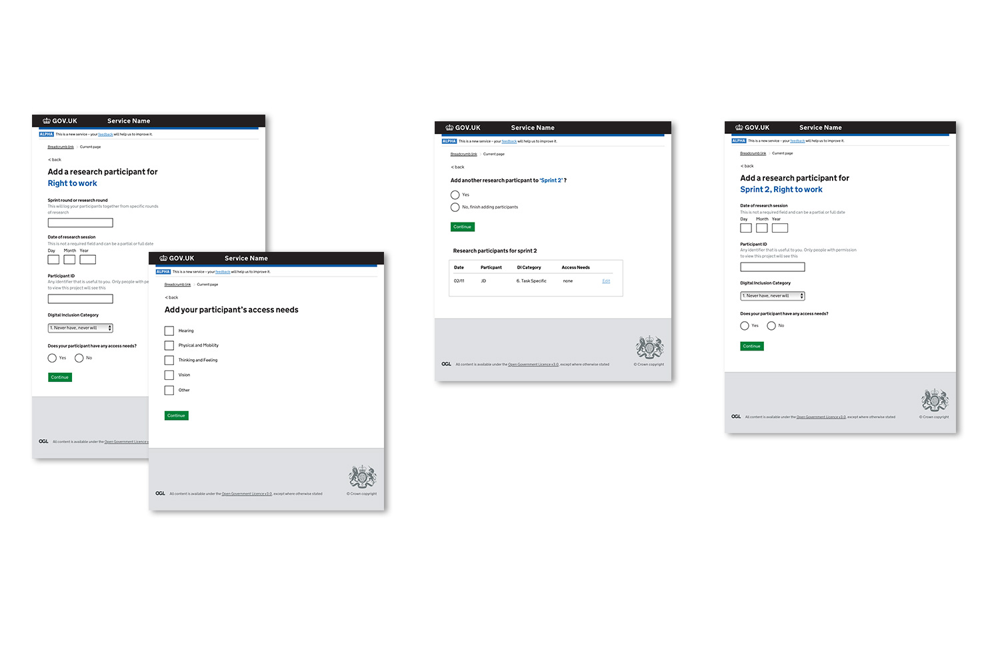

HOME OFFICE DIGITAL
Creating services that are inclusive to everyone, means designing them bearing in mind all levels of digital skills, all levels of language and all access needs. To try to make sure that we are testing our services with as wide a variety of people as possible, GDS developed a digital inclusion scale to categorise users into different personas of varying digital skills and confidence. By having a measure for researchers to refer to, we are more able to monitor whether services are working properly for all users.
the existing prototype and our first iteration
In the Home Office a design and research project was set up to create a formal way of gathering this information while creating a more uniform understanding of what each category is. When I joined the team, a prototype (above left) had been created already that took researchers through a series of questions after their research session resulting in the correct Digital Inclusion category. We developed it through a heuristic review and testing and iterating to a version (above right) with clear guidance, more GDS aligned design patterns, and a simple dashboard to view the output, which got to a point where it was testing very effectively.
Testing from these rounds produced another suggestion: that the real need for this data may not be from the user researchers, but from management instead. After attending ‘The problem to solve’ workshop, by Kate Tarling, I began to think that we might be fully understanding the problem area, the whys and whos of the project. I held a workshop with my team using the suggested framework, and we kicked off a mini discovery phase as a result to understand more clearly the separation between the need for the data being collected and the needs of the person using the ‘service’ to collect the data.
discovery process and findings
Through a series of interviews conducted by the user researchers, we identified high level users and extracted their needs for collecting digital inclusion data. I conducted a workshop with a collection of Home Office Digital user researchers in Sheffield to get a clearer idea of their relationship with digital inclusion, their general level of knowledge of the area, and also their research processes and timelines. What emerged was useful methods some researchers use to extract information, more task based than question based, that the inclusion categories are know, but are still clearly subjectove, and that every researcher has different routines in how and when they record their research sessions.
digital inclusion knowledge workshop
workshop outcome: user researcher collective timeline of when they record data
the user journey for digital inclusion data
Bringing together the different needs we had collected we moved into an alpha stage of the project, confident that we knew clearly what we were hoping to achieve. After starting with the widest selection of sensible and more outlandish design suggestions, we have begun to simultaneously developing two prototypes rapidly iterating and testing, a training and knowledge resource, and form of quick accessible data entry. The most recent prototype is based on a series of tasks the resercher can use that expose the participants confidence and ability with particilar skills that can be referenced against categories, and a flexible way to enter their session's data. See latest versions of the prototype here
pages from recent iteration of working alpha prototype
wireframes of iterations from second round research findings